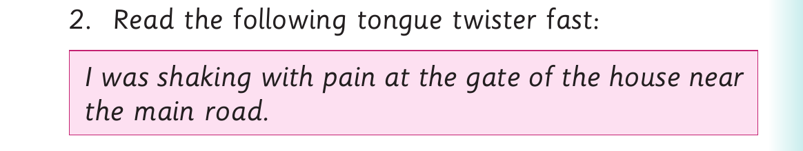

Long vowel sounds - Activities 2 and 3
Activity 2
1. Read the following words aloud: take make cake shake rain gain pain
2. Pronounce the vowels found in the words in (1). 3. Read the following sentences aloud: (a) Bake a cake and take it to Jane. (b) Lake water makes rain. (c) Take this and shake it. (d) Pain will make you unhappy. (e) You gain weight by eating.
Activity 3
1. Act out the following dialogue: Jane : Good morning. My name is Jane. Kate : Oh, I am Kate. Jane : I come from Spain. Where are you from? Kate : I am from Ukraine. Jane : Nice to meet you. Kate : Nice to meet you.

2. Read the following tongue twister fast: I was shaking with pain at the gate of the house near the main road.